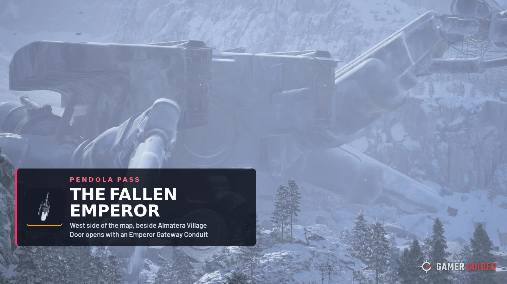

Speranza Ops / Empereur / Références de jeu
L’épave, de l’extérieur aux passages.
Reconnaître les accès et leurs volumes. La maquette actuelle reste à corriger.
EN JEU

Speranza Ops / Empereur / Références de jeu
Reconnaître les accès et leurs volumes. La maquette actuelle reste à corriger.
